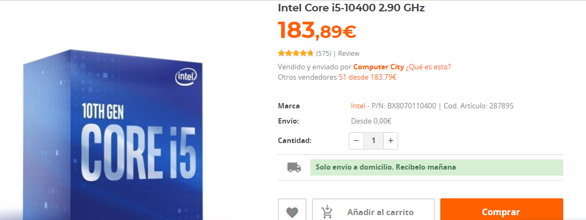
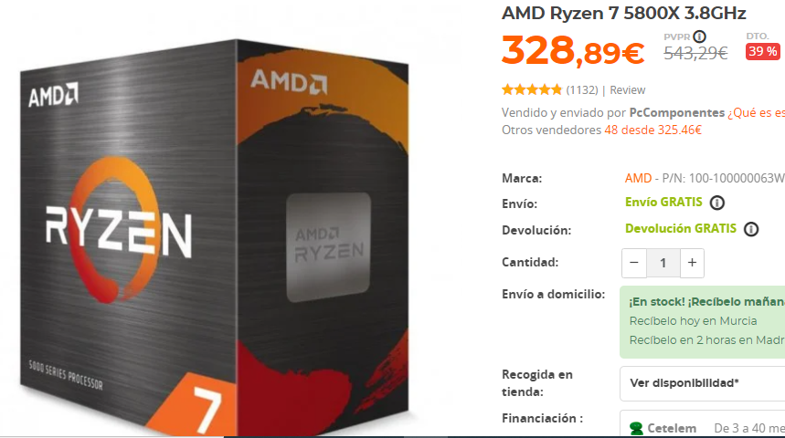
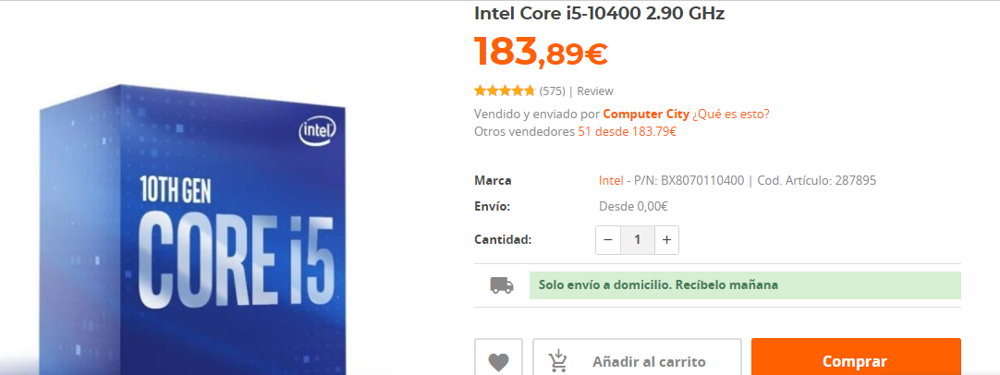
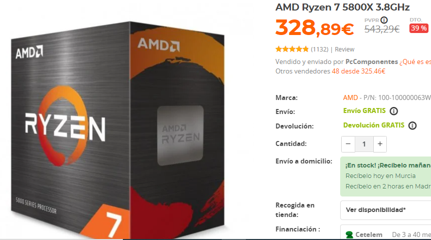

Es un componente principalmente de ordenadores que se encarga de las operaciones lógicas y matemáticas del dispositivo,
es el cerebro del pc y se encarga de la mayor parte de los procesos de un ordenador, pueden ser de 32 y 64 bits.
Existen varias marcas fabricantes, son Intel y AMD. Intel tiene mejor funcionamiento en el sistema operativo Windows,
en cambio AMD tiene mejor rendimiento en videojuegos por su gráfica integrada que está enfocada a usarse en este entorno.
Hay varias gamas de estos componentes, y son:
Intel:
Intel Pentium, Intel Celeron, Intel Core i3, Intel Core i5, Intel Core i7, Intel Core i9, Intel Xeon.
Intel Pentium y Celeron están obsoletos, los Intel Core son los más usados hoy en día de esta marca y se usan para
para trabajar, para jugar, etc. Depende de la generación, los hilos y los núcleos serán mejor para jugar o para trabajar.
Intel tiene varias caractéristicas en sus procesadores, y es de que puedes saber si permite overlock o tiene gráfica integrada
mediante el nombre del procesador, el F para saber si no lleva gráfica, y la K para saber si permite overclock.
(Procesador Intel® Core™ i5-10400F) Es Core i5, generación 10400 y no lleva ni gráfica integrada ni dispone de overclock.
AMD:
AMD Ryzen Athlon, AMD Ryzen 3, AMD Ryzen 5, AMD Ryzen 7, AMD Ryzen 9, AMD Ryzen Threadripper.
El Athlon hoy en día no se usa, se usan principalmente los Ryzen. En cambio, los Threadripper son de gama alta y cuestan
miles de euros, se usan para programas que requieren gran rendimiento como por ejemplo de edición profesional.
Como intel, esta marca tiene letras para identificar características de sus procesadores. Como la G y la X.
La G es para saber si son de bajo consumo, y la X como la K en intel, sirve para el conocimiento de permitir overclock.
 


